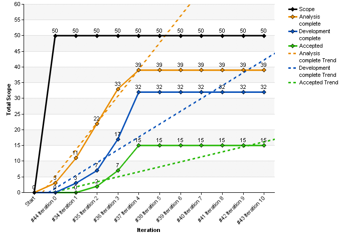

我们在乎的是不返工，而不是快速返工
开始前，请记住这几点：
- 敏捷在于快速反应，不在于速度
- 速度快不一定是好事，有时反而可能导致反应迟缓
- 快速反应的基础是合理库存和快速反馈
“敏捷”一词可能很容易被理解为一种高效工作方式，通过对价值关注、减少浪费、简化流程、团队建设、持续改进、和信息共享，使得工作效率得到大幅度提高。当提到“敏捷是拥抱变化的”时，部分人的理解是，一旦我们遇到变化的时候，可以因为工作率的提高而缩短应对变化所需要的时间—达到快速反应。
但是事实上，敏捷一词的含义中，灵活多过速度，也就是说，敏捷并不只是一种关注提高工作效率的工作方式，而更准确是一种通过短迭代、持续改进、风险拆分、特性团队等实践，最大限度地保证变化风险大的交付件不产生库存的，通过适当设计，持续交付达到快速反馈以求发现变化风险大的交付件，是一种以精益生产思想为指导的方法论。
两种理解的区别在于，前者简单认为敏捷通过提高工作效率来“处理”变化带来的额外工作量，而后者更关注于敏捷通过短迭代和持续改进等实践来“避免”变化带来的额外工作量。因此，我们可以得出这样的结论，“敏捷”是为了能在变化前，减少包袱，即尽可能消除可能因为变化产生的额外工作量，那么变化就可以变得顺其自然，不存在恐惧；而不是因为敏捷实践提高了工作效率，使得放下“包袱”的速度加快，最终可以在较短时间内提升变化的反应速度。
实际上高生产率并不在所有情况下是一件对生产有好处的事情—对于核心生产线之外，其他支撑核心生产部件组装的生产环节，生产效率取决于核心生产线的生产效率，高生产率在其中实际上只是起到增加库存负担的作用。举精益生产中一个经典的例子：汽车厂商的一条核心配装线每天能生产8辆汽车，那么与之匹配轮胎生产线的产能就应该是每小时4件轮胎，那么这条生产线保障的便是每天32件轮胎的产量，并随时可根据核心生产线的产能变化进行调整。
如果一味提高轮胎生产线的生产率，但汽车装配线的生产率不能够提高，这一部分额外生产的轮胎就会成为库存，除去管理库存产生的成本，以及产品折旧以外，如果哪一天市场变化，开始流行17英寸，那么这一批额外生产的16英寸轮胎便很可能成为闲置资产。这里就是我们说的，因为包袱过多，而畏惧变化—我们已经生产了这么多16英寸的轮胎，市场要变，我们倾向于不变。可以这么说，各条生产线之间是一个协调的整体，提高某条生产线的生产效率可能导致过多库存，同样过度提升核心生产线的产能，而不将其控制在市场需求线以下，可能导致更大范围的库存（相应生产线的生产效率都要提升），那么当市场变化的时候，相应变化面临着巨大的浪费。
对应到软件生产环境来，我们的核心生产线是编码线，围绕在编码线周围的还有需求分析和测试，那么一味提高需求分析的生产效率是没有意义的，需求分析线的产能完全取决于编码线的产能，我们只需要保证需求分析的交付物能够稍稍多余编码线能处理的产量即可。我们的实际情况是，需求人员收集了整个版本的需求进行全面分析，编写详细设计，但未考虑开发人员能够开发的上线，很多情况下设计就变成了浪费，特别是需要在开发过程中变更需求时，这些完整的设计就需要重新返工，或者干脆废弃，这便是我们很多时候不愿意看到需求变化的根本原因—因为变化，之前的多余产量变成为库存或者直接称为浪费。
实际上应该做的是将需求线的产能，确定在一个能够适配编码线（核心生产线）最大产能的水平上，并掌握好节奏，不需要过度生产。这也是为什么我们使用燃起图（Burn-up Chart）来跟踪各条生产线之间的产能情况，以达到各生产线的生产节奏保持一致，降低额外生产带来的“变化负担”。下图中“分析线（橙）”与“开发线（蓝）”的完成度始终保持一个较为稳定相对速率（生产节奏），而“完成线（绿）”的斜率却低于前两者，这说明完成的功能不能被及时验收，这就是“库存”在不同生产环节不同的生产节奏。

这里值得一提的是，大多数情况下，库存都被认为是一种资产存在，而不是一种成本。但事实上，在传统制造业永远死于现金流异常，现金流异常的大部分原因在于市场变动使得库存一夜之间从资产变成损耗。
因此，应对市场变动的成功关键在于，一没有过多库存，二如果有库存，有大量现金承担处理库存带来的损失。这也是精益理论得以成型的基础：
如何利用各种手段控制库存量，对于市场变化风险大的部件尽量保证0库存，并通过快速交付，加快现金回笼的速度以保障健康的现金流，使得不可完全避免的库存问题可以通过额外现金解决。
实际上当我们谈到对库存的控制，实际上指的是对那些可能发生需求变化部件的库存控制—不要生产过多未来有很大可能变化的部件。但是我们如何去预测那些未来可能发生变化的部件，并保证它的库存在一个可控制的范围？我们要做的便是敏捷实现快速反应变化实践中除“控制库存”之外的另一种实践“持续改进”。
如果说控制库存是一种“少生产或者不生产可能变化的东西”，那么持续改进就是一种“生产可能变化的东西，但只是用作试探市场”。这种试探便表现为，用最简单的设计快速交付，在市场上试探可能存在的反响，证明概念的可行性，收集市场的反馈，改进部件的设计，使得“可能产生变化”的部分变为“在短时间被市场认同和需求，相对确定”的部分。
在这一点上我们的客户并没有足够的认识，来自他们的声音是：“要么就没有，要么就要全部”，这种经营理念一直以来被认为是“满足客户一切需要”的正确延续。这一点在此不深入探讨下去，个人认为，跟之前提到控制库存的情况一样，在现金流雄厚的时候，或者处于在垄断中竞争的市场环境里，没有快速反馈所带来的浪费（如果有80％的业务已经没有人使用，每一种业务上各种服务功能都成为浪费呢？）可以被现金所承受，那么这就不是个问题，打败通用和福特的是精益化的丰田，但打败我们客户的也许不可能是精益化的BT或者Vodafone。如果没有这种外部竞争的压力，精益化思维可能极难推行。
综上，敏捷的核心在于对变化的快速反应，而并不在于绝对速率，一个稳定生产效率的“生产系统”要优于一个局部效率极高的系统，而其手段在于：
其一，对库存的合理控制和对各生产线节奏的把握，不生产或少生产有变化风险的交付件；
其二，利用适当设计，快速交付甄别出可能变化的部分，通过反馈，逐步完善交付件的设计，使得变化造成的风险降到最小。而绝对不是通过敏捷达到高效的工作方式，当需求变化产生的时候，也可以因为工作率极高满足在短时间内完成返工的要求。